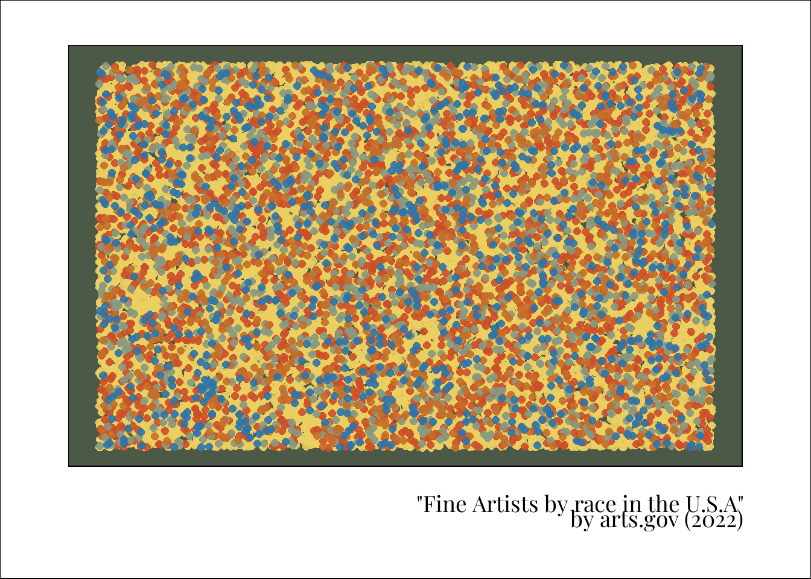

topic <- "Artists"
year <- 2022
week <- 39
yrwk <- glue::glue("{year}-{week}")
plots_dir <- paste0(year, "-", week)
fs::dir_create(here::here("plots", plots_dir))
png_file <- glue::glue("{yrwk}_{topic}.png")
pdf_file <- glue::glue("{yrwk}_{topic}.pdf")2022-39_Artists
suppressMessages(library(tidyverse))
library(scales)
Attaching package: 'scales'The following object is masked from 'package:purrr':
discardThe following object is masked from 'package:readr':
col_factorlibrary(showtext)Loading required package: sysfontsLoading required package: showtextdbfont_add_google(name = "Playfair Display", family = "font")
showtext_opts(dpi = 300)
showtext_auto(enable = TRUE)artists <- readr::read_csv('https://raw.githubusercontent.com/rfordatascience/tidytuesday/master/data/2022/2022-09-27/artists.csv')Rows: 3380 Columns: 7
── Column specification ────────────────────────────────────────────────────────
Delimiter: ","
chr (3): state, race, type
dbl (4): all_workers_n, artists_n, artists_share, location_quotient
ℹ Use `spec()` to retrieve the full column specification for this data.
ℹ Specify the column types or set `show_col_types = FALSE` to quiet this message.artists %>%
filter(type == "Fine Artists, Art Directors, And Animators") %>%
group_by(race) %>%
summarise(artists_n = sum(artists_n, na.rm = TRUE))# A tibble: 5 × 2
race artists_n
<chr> <dbl>
1 African-American 9090
2 Asian 14040
3 Hispanic 24775
4 Other 8600
5 White 175160x_afram <- runif(909.0)
y_afram <- runif(909.0)
x_asian <- runif(1404.0)
y_asian <- runif(1404.0)
x_other <- runif(860.0)
y_other <- runif(860.0)
x_hispa <- runif(2477.0)
y_hispa <- runif(2477.0)
x_white <- runif(17516.0)
y_white <- runif(17516.0)
green <- "#879981"
blue <- "#2d74a8"
red <- "#cb4f29"
yellow <- "#ebcf61"
orange <- "#c56e29"
size <- 2.5
alpha <- 0.9
ggplot() +
geom_point(aes(x = x_white, y = y_white),
colour = yellow, size = size, alpha = alpha) +
geom_point(aes(x = x_hispa, y = y_hispa),
colour = red, size = size, alpha = alpha) +
geom_point(aes(x = x_asian, y = y_asian),
colour = green, size = size, alpha = alpha) +
geom_point(aes(x = x_afram, y = y_afram),
colour = orange, size = size, alpha = alpha) +
geom_point(aes(x = x_other, y = y_other),
colour = blue, size = size, alpha = alpha) +
labs(caption = "\"Fine Artists by race in the U.S.A\"\n by arts.gov (2022)") +
theme_void() +
theme(
plot.margin = margin(1,1.5,1.5,1.5, "cm"),
plot.caption = element_text(family = "font",
colour = "black",
vjust = -4),
plot.background = element_rect(fill = "white"),
panel.background = element_rect(fill = "#4c5947")
)
ggsave(here::here("plots", yrwk, pdf_file),
width = 12, height = 8, dpi = 300,
device = cairo_pdf)
ggsave(here::here("plots", yrwk, png_file),
width = 12, height = 8, dpi = 300,
device = "png")